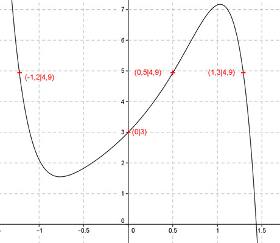
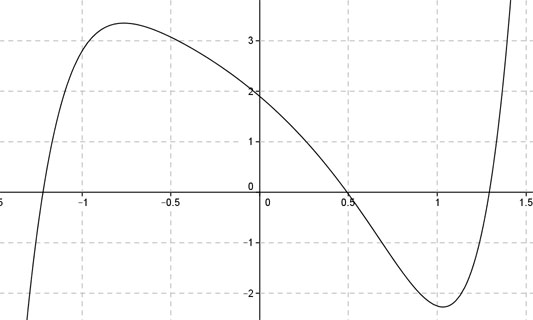

Aufgabe 115 Ergänzen Sie die Wertetabelle für den Graphen: y = 3ex - x7 x 0 -1,2 oder 0,5 oder 1,3 y 3 4,9 y = f(0) = 3 * e0 - 07 = 3 * 1 = 3  An welchen Stellen x die Funktion den Wert 4,9 annimmt, ist elementar nicht zu ermitteln. Abgelesen: Es sind 3 Stellen. Zur Berechnung wendet man ein Näherungs- verfahren an, hier die Regula falsi. fx = 4,9 eingesetzt: 4,9 = 3 * ex - x7 | +x7 4,9 + x7 = 3 * ex |-3*ex x7 - 3ex + 4,9 = 0 Als Funktion: y = x7 - 3ex + 4,9 Die Nullstellen dieser Funktion (y = 0) entsprechen den gesuchten Werten für x.  Abgelesen: Nullstellen zwischen -1,3 und - 1, zwischen 0,4 und 0,6 und zwischen 1 und 1,5. Regula falsi: x0 = gesuchte Nullstelle x1 * |y(x2)| + x2 * |y(x1)| x0 = ------------------------------ |y(x1)| + |y(x2)| Nullstelle x0 zwischen -1,3 und -1 mit Excel ermittelt: A B C D E F G H I J -1,3 -1 2,7962 2,1926 -3,6351 -2,1926 -5,8277 4,9888 -1,1682 0,9989 -1,3 -1,1682 0,9989 2,1926 -1,2985 -2,5612 -3,8598 3,1914 -1,2094 0,2200 -1,3 -1,2094 0,2200 2,1926 -0,2861 -2,6517 -2,9378 2,4126 -1,2177 0,0427 -1,3 -1,2177 0,0427 2,1926 -0,0555 -2,6698 -2,7253 2,2352 -1,2193 0,0081 -1,3 -1,2193 0,0081 2,1926 -0,0105 -2,6733 -2,6838 2,2006 -1,2195 0,0015 -1,3 -1,2195 0,0015 2,1926 -0,0020 -2,6739 -2,6759 2,1941 -1,2196 0,0003 -1,3 -1,2196 0,0003 2,1926 -0,0004 -2,6740 -2,6744 2,1928 -1,2196 0,0001 Die gesuchte Nullstelle ergibt sich nach mehreren Näherungen mit ausreichender Genauigkeit zu x01 = -1,2 gerundet. Weitere Erläuterungen zur Tabelle siehe Aufgabe 101. Die Nullstelle zwischen 0,4 und 0, 6 ergibt sich nach dem selben Verfahren zu x02 = 0,5 gerundet. Die Nullstelle zwischen 1 und 1,5 ergibt sich nach dem selben Verfahren zu x03 = 1,3 gerundet.